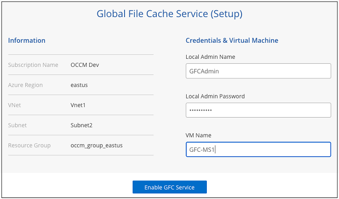
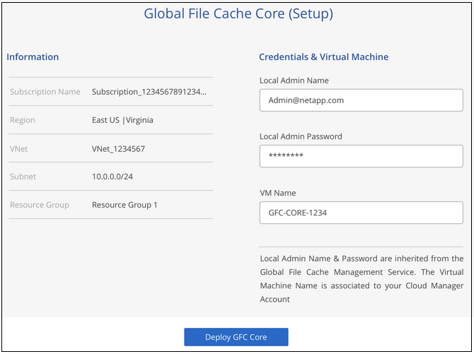
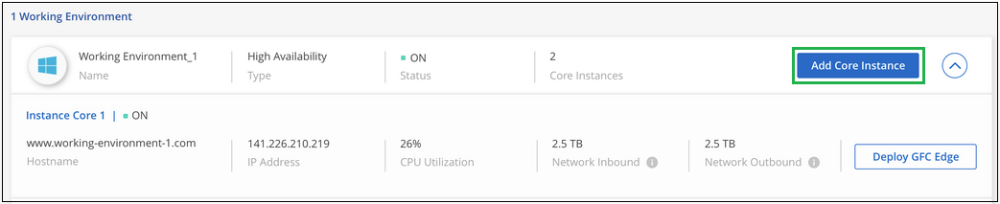

ドキュメントの変更をリクエスト
ドキュメントの変更をリクエスト GitHub で編集
GitHub で編集 寄稿者向けガイド
寄稿者向けガイドはじめに
Cloud Manager を使用して、グローバルファイルキャッシュ管理サーバおよびグローバルファイルキャッシュコアソフトウェアを作業環境に導入します。
Cloud Manager を使用してグローバルファイルキャッシュを有効化
この構成では、グローバルファイルキャッシュ管理サーバとグローバルファイルキャッシュコアを、 Cloud Manager を使用して Cloud Volumes ONTAP システムを作成したのと同じ作業環境に導入します。
見る "このビデオでは" をクリックして、最初から最後までのステップを確認してください。
クイックスタート
次の手順を実行すると、すぐに作業を開始できます。また、残りのセクションまでスクロールして詳細を確認することもできます。
Azure または AWS に Cloud Volumes ONTAP を導入し、 SMB ファイル共有を設定詳細については、を参照してください "Azure で Cloud Volumes ONTAP を起動します" または "AWS での Cloud Volumes ONTAP の起動"。
グローバルファイルキャッシュ管理サーバのインスタンスを、 Cloud Volumes ONTAP のインスタンスと同じ作業環境に導入します。
グローバルファイルキャッシュコアのインスタンスまたは複数のインスタンスを、 Cloud Volumes ONTAP のインスタンスと同じ作業環境に展開し、 Active Directory ドメインに参加させます。
グローバルファイルキャッシュコアインスタンスに、グローバルファイルキャッシュライセンス管理サーバ（ LMS ）サービスを設定します。NSS のクレデンシャル、またはネットアップが提供するお客様 ID とサブスクリプション番号を確認して、サブスクリプションをアクティブ化してください。
を参照してください "グローバルファイルキャッシュエッジインスタンスの配置" グローバルファイルキャッシュエッジインスタンスを各リモートロケーションに配置するには、次の手順を実行します。この手順は、 Cloud Manager では実行されません。
ストレージプラットフォームとして Cloud Volumes ONTAP を導入
現在のリリースでは、 Azure または AWS に導入された Cloud Volumes ONTAP がグローバルファイルキャッシュでサポートされています。前提条件、要件、および導入手順の詳細については、を参照してください "Azure で Cloud Volumes ONTAP を起動します" または "AWS での Cloud Volumes ONTAP の起動"。
次のグローバルファイルキャッシュの追加要件に注意してください。
-
SMB ファイル共有は Cloud Volumes ONTAP のインスタンスで設定する必要があります。
インスタンスに SMB ファイル共有が設定されていない場合は、グローバルファイルキャッシュコンポーネントのインストール時に SMB 共有を設定するように求められます。
作業環境でグローバルファイルキャッシュを有効にします
グローバルファイルキャッシュウィザードでは、以下に示すように、グローバルファイルキャッシュ管理サーバーインスタンスおよびグローバルファイルキャッシュコアインスタンスを展開する手順を順を追って説明します。

-
Cloud Volumes ONTAP を導入した作業環境を選択します。
-
サービスパネルで、 * GFC を有効にする * をクリックします。

-
概要ページを読み、 * 続行 * をクリックします。
-
Cloud Volumes ONTAP インスタンスに使用可能な SMB 共有がない場合は、 SMB サーバおよび SMB 共有の詳細を入力して共有を作成するように求められます。SMB 設定の詳細については、を参照してください "ストレージプラットフォーム"。
完了したら、 * Continue * をクリックして SMB 共有を作成します。

-
Global File Cache Service ページで、展開する Global File Cache Edge インスタンスの数を入力し、システムが Network Configuration and Firewall Rules 、 Active Directory の設定、および除外する Antivirus の要件を満たしていることを確認します。を参照してください "前提条件" 詳細：

-
要件が満たされていること、またはこれらの要件を満たす情報があることを確認したら、 [* Continue （続行） ] をクリックします。
-
グローバルファイルキャッシュ管理サーバー VM へのアクセスに使用する管理者資格情報を入力し、 * GFC サービスを有効にする * をクリックします。Azure の場合はユーザ名およびパスワードとしてクレデンシャルを入力し、 AWS の場合は適切なキーペアを選択します。必要に応じて VM / インスタンス名を変更できます。

-
グローバルファイルキャッシュ管理サービスが正常に展開されたら、 [* 続行 ] をクリックします。
-
Global File Cache Core の場合、 Active Directory ドメインに参加するための管理者ユーザクレデンシャルとサービスアカウントユーザクレデンシャルを入力します。[* Continue （続行） ] をクリックします。
-
グローバルファイルキャッシュコアインスタンスは、 Cloud Volumes ONTAP インスタンスと同じ Active Directory ドメインに配置する必要があります。
-
サービスアカウントはドメインユーザであり、 Cloud Volumes ONTAP インスタンスの BUILTIN\Backup Operators グループに含まれます。

-
-
グローバルファイルキャッシュコア VM へのアクセスに使用する管理者資格情報を入力し、 * GFC コアの展開 * をクリックします。Azure の場合はユーザ名およびパスワードとしてクレデンシャルを入力し、 AWS の場合は適切なキーペアを選択します。必要に応じて VM / インスタンス名を変更できます。

-
グローバルファイルキャッシュコアが正常に展開されたら、 * ダッシュボードへ移動 * をクリックします。

ダッシュボードには、管理サーバインスタンスとコアインスタンスが * オン * で動作していることが示されています。
グローバルファイルキャッシュのインストールのライセンスを取得します
グローバルファイルキャッシュを使用する前に、グローバルファイルキャッシュコアインスタンス上でグローバルファイルキャッシュライセンス管理サーバ（ LMS ）サービスを設定する必要があります。NSS のクレデンシャル、またはお客様 ID とサブスクリプション番号をネットアップから取得して、サブスクリプションをアクティブ化する必要があります。
この例では、パブリッククラウドに展開したばかりのコアインスタンスに LMS サービスを設定します。これは、 LMS サービスをセットアップする 1 回限りのプロセスです。
-
次の URL を使用して、グローバルファイルキャッシュコア（ LMS サービスとして指定するコア）の [Global File Cache License Registration] ページを開きます。<IP_address> _ をグローバルファイルキャッシュコアの IP アドレスに置き換えます。https://<ip_address>/lms/api/v1/config/lmsconfig.html[]
-
続行するには、 [Continue to this website （ not recommended ）（この Web サイトに進む（推奨しません）） ] をクリックしますLMS を設定したり、既存のライセンス情報を確認したりできるページが表示されます。

-
登録モードを選択します。
-
「 NetApp LMS 」は、ネットアップまたは認定パートナーから NetApp Global File Cache Edge ライセンスを購入したお客様に使用されます。（優遇料金）
-
「レガシー LMS 」は、ネットアップサポートから顧客 ID を受け取った既存または試用版のお客様に使用されます。（このオプションは廃止されました）。
-
-
この例では、 * NetApp LMS * をクリックし、お客様 ID （できれば E メールアドレス）を入力して、 * Register LMS * をクリックします。

-
GFC ソフトウェアのサブスクリプション番号とシリアル番号が記載された確認の E メールがネットアップから届いているかどうかを確認します。

-
NetApp LMS Settings * タブをクリックします。
-
[GFC ライセンスサブスクリプション *] を選択し、 GFC ソフトウェアサブスクリプション番号を入力し、 [*Submit] をクリックします。

GFC ライセンスサブスクリプションが正常に登録され、 LMS インスタンスに対してアクティブ化されたことを示すメッセージが表示されます。その後の購入はすべて GFC ライセンスサブスクリプションに自動的に追加されます。
-
オプションで、 License Information タブをクリックして、すべての GFC ライセンス情報を表示できます。
構成をサポートするために複数のグローバルファイルキャッシュコアを導入する必要があると判断した場合は、ダッシュボードで * コアインスタンスの追加 * をクリックし、導入ウィザードに従います。
コアの導入を完了したら、を実行する必要があります "グローバルファイルキャッシュエッジインスタンスを配置します" 各リモートオフィスに配置できます。
コアインスタンスを追加導入します
多数の Edge インスタンスがあるために複数の Global File Cache Core をインストールする必要がある構成の場合は、作業環境に別の Core を追加できます。
Edge インスタンスを配置する場合は、最初のコアに接続するように一部を設定し、他のコアを 2 番目のコアに接続するように設定します。両方のコアインスタンスが作業環境内の同じバックエンドストレージ（ Cloud Volumes ONTAP インスタンス）にアクセスします。
-
グローバルファイルキャッシュダッシュボードで、 * コアインスタンスの追加 * をクリックします。

-
Active Directory ドメインに参加するための管理者ユーザクレデンシャルとサービスアカウントユーザクレデンシャルを入力します。[* Continue （続行） ] をクリックします。
-
グローバルファイルキャッシュコアインスタンスは、 Cloud Volumes ONTAP インスタンスと同じ Active Directory ドメインに存在する必要があります。
-
サービスアカウントはドメインユーザであり、 Cloud Volumes ONTAP インスタンスの BUILTIN\Backup Operators グループに含まれます。
-
-
グローバルファイルキャッシュコア VM へのアクセスに使用する管理者資格情報を入力し、 * GFC コアの展開 * をクリックします。Azure の場合はユーザ名およびパスワードとしてクレデンシャルを入力し、 AWS の場合は適切なキーペアを選択します。必要に応じて VM 名を変更することができます。
-
グローバルファイルキャッシュコアが正常に展開されたら、 * ダッシュボードへ移動 * をクリックします。

ダッシュボードには、作業環境の 2 番目のコアインスタンスが反映されます。